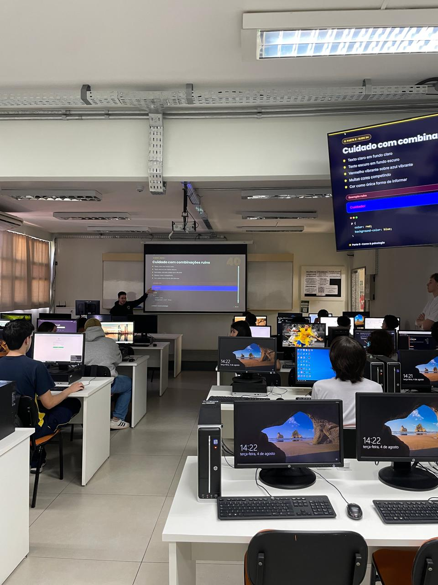

Relatório – 11ª Aula
Data: 04/08/2026
Turma: A
Instrutor:Victor
Design no CSS
Nessa aula do dia 04 de agosto, o encontro foi dedicado ao aprofundamento em CSS, expandindo os conceitos de estilização e "maquiagem" das páginas web iniciados anteriormente. O instrutor detalhou o funcionamento de propriedades fundamentais para o controle de layout e design, como margin, border e padding, permitindo que os alunos compreendessem como gerenciar os espaçamentos internos, externos e os contornos de cada elemento. Com o intuito de consolidar esses aprendizados técnicos, a turma foi desafiada a realizar a criação de um currículo, utilizando o projeto como uma oportunidade prática para aprimorar a estética visual e a organização do código CSS. Assim como em atividades anteriores de portfólio pessoal, os alunos puderam transformar a teoria em código, focando na arquitetura visual e na experiência do usuário.
